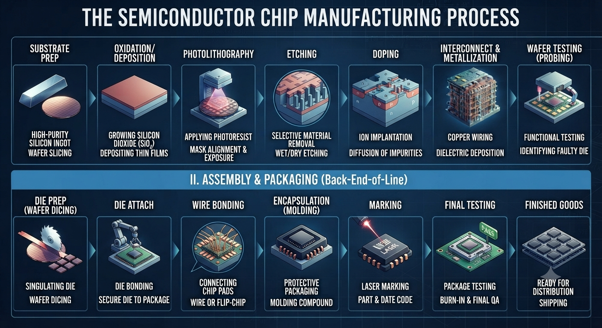
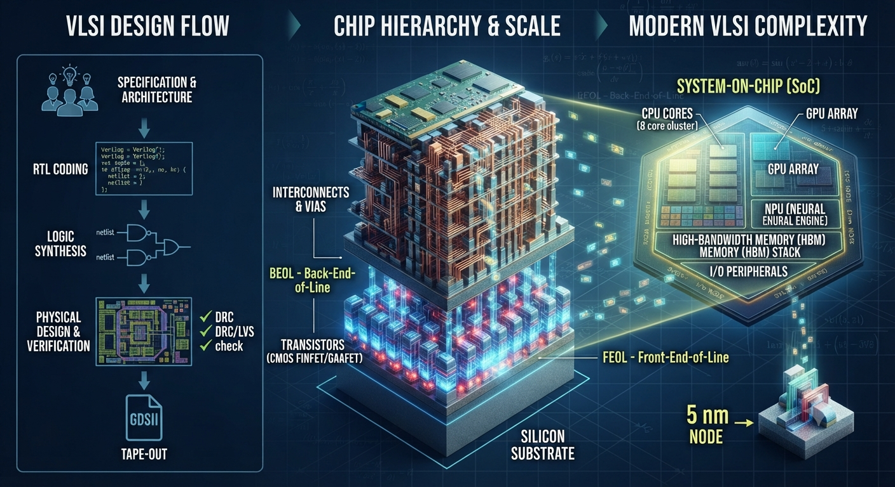

Very-Large-Scale Integration brings millions or billions of transistors together on one integrated circuit. The name describes scale, but the practice is really about coordination: architecture, logic, timing, power, layout, manufacturing and test must all agree before a chip can work reliably.
What is VLSI?
VLSI is the design and integration of a very large number of electronic devices—primarily transistors—onto a single chip. Those transistors form logic gates, memories, processors, communication interfaces, analogue blocks and specialised accelerators. A modern system-on-chip may combine many of these functions while presenting itself to a product designer as one component.
Earlier integrated circuits contained only a handful of devices. Small-scale and medium-scale integration joined progressively larger groups of gates; large-scale integration enabled early memories and processors. VLSI extended that progression until complete computing systems could fit on silicon. Today the term remains useful even though contemporary chips exceed the device counts once imagined by the original classification.
The goal is not simply to place the greatest possible number of transistors. A successful design must perform its intended function within limits for speed, energy, area, temperature, reliability and cost. It must also tolerate variation in manufacturing and be testable after fabrication. VLSI engineering turns those competing requirements into a physical implementation.
CMOS: the foundation of digital VLSI
Most digital VLSI uses complementary metal-oxide-semiconductor, or CMOS, technology. CMOS logic pairs n-channel and p-channel transistors. In a simple inverter, one device pulls the output toward the supply while the other pulls it toward ground. Ideally, little steady current flows once the output settles, which makes CMOS well suited to dense digital systems.
A MOSFET has source and drain regions connected by a channel whose conductivity is controlled by an insulated gate. The voltage at that gate changes the distribution of charge in the channel. Designers combine MOSFETs into gates, registers, memories and larger functional blocks. Standard-cell libraries provide characterised building blocks with known timing, power and physical properties for a specific manufacturing process.
Real devices are not ideal switches. They leak current, take time to charge wiring capacitance and vary with voltage, temperature and manufacturing conditions. As a result, circuit behaviour must be checked across process, voltage and temperature corners. Robust design depends on margins and models, not only on nominal simulation.
From silicon wafer to packaged chip: FEOL and BEOL
Chip manufacturing starts with a highly purified silicon ingot that is sliced and polished into wafers. Repeated cycles of deposition, oxidation, photolithography, etching and ion implantation create carefully shaped regions in and above the wafer. Photolithography transfers patterns from masks into light-sensitive material; etching removes selected material; doping changes electrical behaviour.
The front-end-of-line, or FEOL, forms the transistors and their immediate structures. The back-end-of-line, or BEOL, builds the insulating layers, metal wires and vertical connections that join those transistors into circuits. Modern chips require many interconnect layers because routing billions of devices is as consequential as forming the devices themselves.

After wafer-level tests identify functioning dies, the wafer is diced. Individual dies are attached to packages and connected through wire bonds, flip-chip bumps or other interconnects. Encapsulation protects the silicon, while final tests check operation under defined conditions. Advanced packages may combine several dies, memory stacks and specialised components within one closely connected system.
The VLSI design flow
A VLSI project begins with a specification. It defines features, performance targets, interfaces, power limits, operating conditions, test expectations and cost constraints. Architects divide the system into blocks and decide which work belongs in processors, fixed-function logic, memories, analogue circuits or software.
The front-end flow describes and verifies intended behaviour. The back-end flow transforms that verified logic into geometry that can be manufactured. These stages are connected rather than isolated: physical estimates can reveal that an architectural choice is too slow, too large or too power-hungry, forcing refinement earlier in the flow.

At major milestones, teams review evidence rather than assuming that a tool completed the job correctly. Requirements must trace into tests, design constraints must match the specification, and sign-off results must correspond to the final database. This disciplined traceability matters because fabrication is expensive and post-silicon fixes are limited.
RTL design, simulation and functional verification
Register-Transfer Level design describes how data moves between registers and how combinational logic transforms it between clock edges. Hardware-description languages such as SystemVerilog or VHDL express this concurrent behaviour. RTL is different from ordinary sequential software: multiple hardware blocks operate at the same time and must coordinate through explicit signals and protocols.
Designers use linting, clock-domain-crossing checks and reset-domain analysis to detect structural risks. Simulation exercises the design with directed tests and constrained-random stimulus. Assertions state properties that must always hold, while coverage shows which behaviours and conditions have been explored. Formal verification can mathematically prove selected properties or compare two representations of a design.
Verification often consumes more effort than writing the initial RTL. Corner cases arise from simultaneous requests, unusual reset sequences, back-pressure, arithmetic limits and interactions between clocks. A reusable verification environment and clear interfaces make it easier to expose these failures before they become physical silicon.
Logic synthesis and design constraints
Logic synthesis converts RTL into a gate-level netlist using cells from the target technology library. The tool preserves behaviour while optimising against timing, power and area constraints. Constraints describe clocks, input and output timing, exceptions and environmental assumptions. Incorrect constraints can produce a design that appears successful while checking the wrong problem.
Equivalence checking confirms that the synthesised representation matches the intended RTL despite optimisation. Designers also consider design-for-test structures, such as scan chains and built-in self-test, so manufactured chips can be observed and exercised. Testability must be planned early because inaccessible faults are difficult to diagnose later.
Physical design: floorplanning, placement and routing
Physical design begins with floorplanning. Engineers establish the chip outline, place large memories and intellectual-property blocks, reserve routing channels and plan power delivery. A good floorplan respects data flow and leaves realistic space for wires; a poor one can create congestion or long paths that later optimisation cannot repair.
Placement assigns standard cells to physical locations. Clock-tree synthesis distributes clocks with controlled latency and skew. Routing then connects signal and power nets through permitted metal layers and vias. Each step changes wire length, capacitance, delay and switching energy, so extraction and analysis become increasingly accurate as the layout develops.
Static timing analysis evaluates whether data reaches each register within setup and hold requirements across relevant corners and operating modes. Power analysis estimates dynamic switching, short-circuit current and leakage. Power integrity checks voltage drop, while electromigration analysis considers whether sustained current may damage interconnects. Thermal conditions influence both timing and lifetime.
Physical verification, sign-off and tape-out
Design-rule checking, or DRC, verifies that geometry follows the manufacturing process rules. Layout-versus-schematic checking, or LVS, confirms that the extracted physical connectivity matches the intended circuit. Electrical-rule checks identify unsafe or unsupported arrangements, while antenna checks address charge that can accumulate during fabrication.
Sign-off combines final timing, signal-integrity, power-integrity, reliability and physical-verification results. Teams examine multiple process corners and operating modes because a chip must work beyond one favourable condition. Waivers require documented engineering judgement; they should never be treated as a way to hide unresolved risk.
Tape-out is the release of the final GDSII or OASIS layout database for mask preparation and fabrication. The name comes from an earlier era of magnetic tape, but the milestone still marks a critical commitment. After fabrication, bring-up teams power the first silicon carefully, test basic functions, compare measurements with models and investigate any difference between expected and observed behaviour.
Chip scaling, FinFETs and GAAFETs
Scaling historically reduced transistor dimensions so more devices could fit in a given area while improving performance and cost per function. Smaller dimensions, however, make electrostatic control, leakage, variability, wiring delay and heat increasingly difficult. A process-node name is therefore not a complete physical measurement or a guarantee of product performance.
Planar transistors gave way to FinFETs, where the gate wraps around a raised channel fin for better control. Gate-all-around field-effect transistors, or GAAFETs, extend that idea by surrounding nanosheet or nanowire channels. These structures can improve electrostatic behaviour, but they require precise fabrication and careful co-optimisation of process and design.
Modern progress also depends on design-technology co-optimisation. Cell architecture, interconnect resistance, power delivery, patterning and system workloads are considered together. Useful improvement may come from a better memory hierarchy or specialised accelerator even when transistor density alone changes modestly.
Chiplets, advanced packaging and 3D integration
A monolithic system places its major functions on one die. Chiplet architectures divide the system among smaller dies connected within a package. This can allow compute, input/output and memory functions to use processes suited to their needs, and smaller dies may improve manufacturing yield. The benefits depend on high-quality die-to-die interfaces, packaging capacity and system-level verification.
Two-and-a-half-dimensional integration places dies on an interposer or bridge, while three-dimensional integration stacks components vertically. Through-silicon vias, hybrid bonding and other dense connections shorten selected data paths. High-bandwidth memory is an important example of stacked integration near compute logic.
Vertical integration introduces thermal, mechanical, test and repair challenges. Heat must escape through a more complex structure, and a failed die can reduce the value of an assembled package. Known-good-die testing, standard interfaces and clear ownership across suppliers are therefore essential.
AI accelerators and modern system-on-chip design
AI workloads place unusual pressure on data movement and parallel arithmetic. Accelerators use arrays of specialised processing elements, local memories and high-bandwidth interfaces to perform repeated operations efficiently. Their value comes from the complete hardware-software system: compilers, data formats and memory scheduling are as important as multiply-accumulate units.
A modern system-on-chip may combine CPU cores, graphics, neural-processing units, security engines, media blocks and interfaces. Integration reduces communication distance but increases verification complexity. Power domains, clock domains and shared resources must behave predictably across boot, sleep, faults and changing workloads.
VLSI engineering disciplines and skills
VLSI is a team field. Architects shape systems; RTL designers implement digital behaviour; verification engineers build evidence of correctness; analogue and memory designers work at circuit level; physical-design engineers implement layout; design-for-test engineers make defects observable; and product and test engineers connect design assumptions with manufactured devices.
Durable foundations include digital logic, computer architecture, electronics, probability, programming and semiconductor devices. Engineers also need scripting, version control, clear documentation and the ability to interpret tool reports critically. Tools change, but reasoning about interfaces, constraints and evidence remains valuable.
Why VLSI matters
VLSI makes modern computing physically possible. It connects abstract algorithms with electrical devices that must work under real limits. The field shapes energy use in data centres, battery life in mobile products, safety in vehicles, communications infrastructure and the accessibility of computing around the world.
Responsible VLSI work considers security, reliability, manufacturing resources and product lifetime alongside performance. The best chip is not automatically the largest or fastest; it is the one that delivers dependable value within a well-understood system.
Continue with the Semiconductor Technology hub, review the shorter VLSI topic guide, or explore how integrated circuits support AI technology and modern computing.